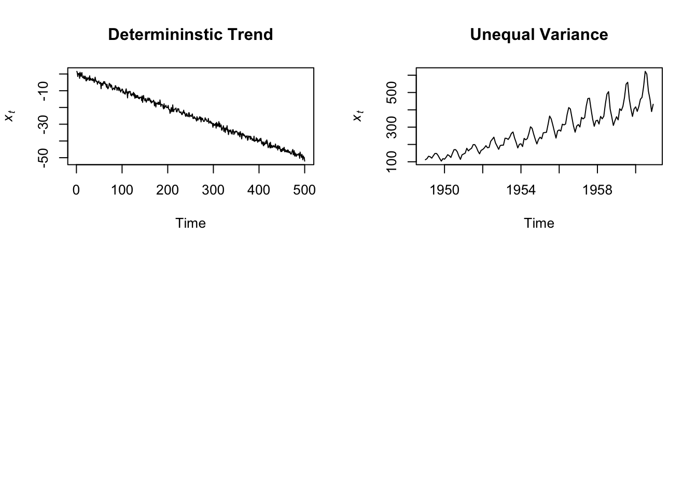
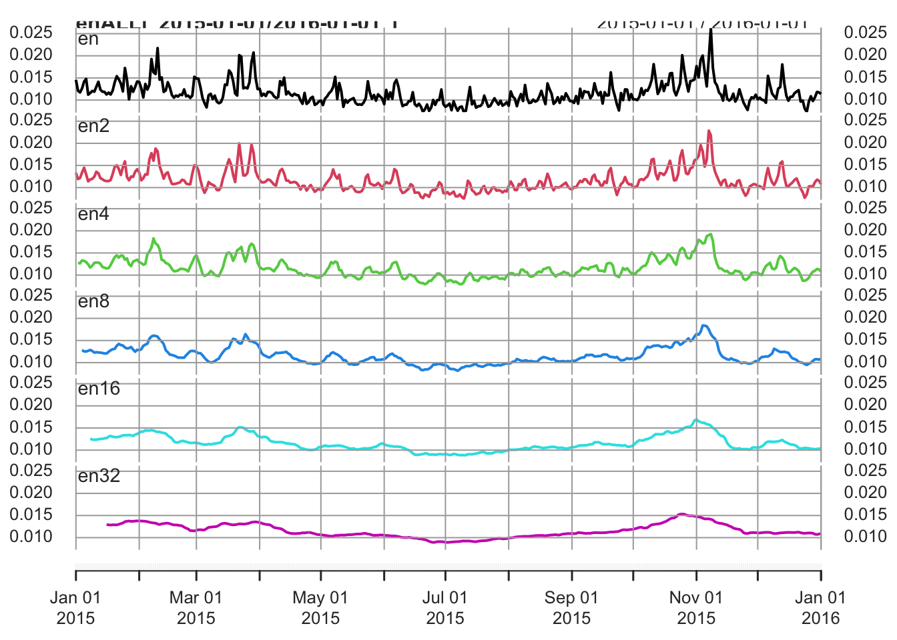

Chapter 7 Structural Decomposition
7.1 Component of a time series
A time series can be considered as composed of 4 main components: trend, cycle, seasonality, and the irregular or remainder/residual component.

The Trend component is the longest-term behavior of a time series, or a systematic change in a time series. The simplest model for a trend is a linear increase or decrease, but the trend has not to be linear. In the AirPassengers time series there is a clear upward trend. A distinction is made between deterministic and stochastic trends:
A deterministic trend is a fixed function of time. If a series has a deterministic trend, it will likely appear to grow or decline steadily over time. That is, the increase (or decrease) in the value of the series will be a direct function of time. A series with a deterministic trend is said to be trend stationary.
A stochastic trend has a random component that make it unpredictable. It wanders up and down, or exibits change of direction at unpredictable times. An example of stochastic trend is provided by the so-called random walk process, and time series like that are also said to be characterized by a unit root and difference stationary.
library(xts)
data("AirPassengers")
AirPassengers_xts <- as.xts(AirPassengers)
plot.xts(AirPassengers_xts)
- The Seasonal component is a repeated pattern occurring at a fixed time period such as the time of the year or the day of the week (the frequency of seasonality, which is always a fixed and known frequency). There is a clear seasonal variation in the AirPassenger time series: bookings were highest during the summer months of June, July, and August and lowest during the autumn/winter months.

The cycle is a pattern that do not correspond to some fixed natural period. A time series with a cycle exhibits fluctuations (rises and falls) not occurring at a fixed frequency (none of these is apparent in the airline bookings time series). The cycle component is therefore different from the seasonal variation in that the former does not follow a fixed calendar frequency. The cyclic component of the series is often considered along with the trend part (trend-cycle).
The irregular or remainder/residual component is the random-like part of the series.
Along with the analysis of the peaks (see previous chapter), analyzing a time series based on these structural parts can be an important exploratory step. It help understanding the likely causes of the series features and formulate an appropriate time series model. For instance, in the case of the AirPassengers series, we could hypothesize that the increasing trend is due to the rising prosperity in the aftermath of the Second World War, greater availability of aircraft, cheaper flights due to competition between airlines, and an increasing population. The seasonal variation, instead, seems to coincide with vacation periods.
7.2 Structural decomposition
Decomposition methods try to identify and separate the above mentioned parts of a time series. Usually they consider together the trend and cycle (trend-cycle) - the longer-term changes in the series - and the seasonal factors - periodic fluctuations of constant length happening at a specific calendar frequency).
There are two main ways through which these elements can be combined together: in the additive and the multiplicative form:
- The additive model (\(x_{t} = m_{t} + s_{t} + z_{t}\), where \(x_{t}\) is the observed time series, \(m_{t}\) is the trend-cycle component, \(s_{t}\) is the seasonal component and \(z_{t}\) is the residual) is useful when the seasonal variation is relatively constant over time
- The multiplicative model (\(x_{t} = m_{t} * s_{t} * z_{t}\)) is useful when the the seasonal effects tends to increase as the trend increases.
There are different methods to decompose a time series. Here we consider the function decompose (Classical Seasonal Decomposition by Moving Averages). To apply this function, we need a ts object.
Considering the AirPassengers time series, since the seasonal effect tends to increase as the trend increases, we can use a multiplicative model.

As an example of additive model we can use data from the “Seatbels” data set.


We can re-create the original time series starting from its elements (we don’t actually need to do that, it is just for illustrative purposes).
par(mfrow=c(2,1))
plot(AirPassengers_dec$trend * AirPassengers_dec$seasonal * AirPassengers_dec$random,
xlim=c(1950, 1960), ylim=c(0,600), main = "'Re-composed' series", ylab="")
plot(AirPassengers, xlim=c(1950, 1960),ylim=c(0,600), main = "Original series", ylab="")